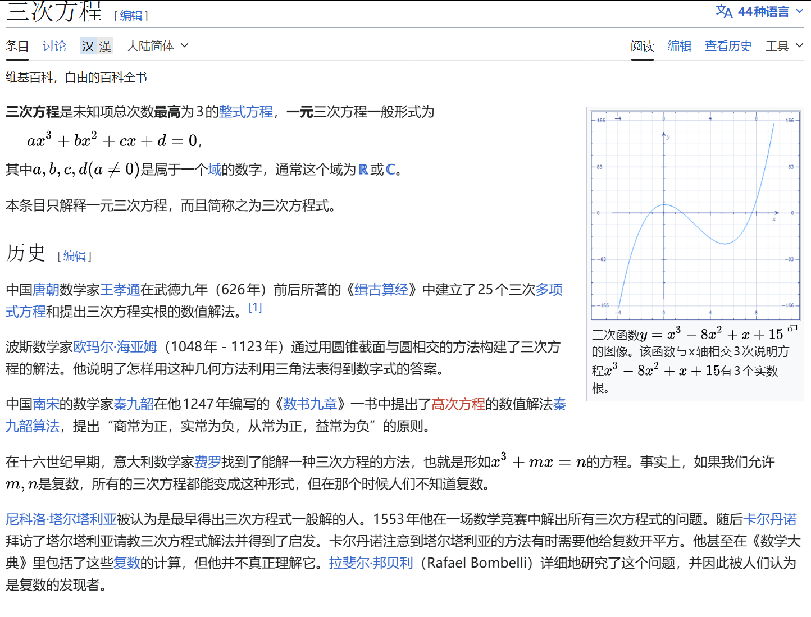

常用结论
我们由一个寻常的三元三次对称式出发: \[\begin{gathered} a^3+b^3+c^3-3abc\\ =(a+b+c)(a^2+b^2+c^2-ab-bc-ca)\\ =\frac{1}{2}(a+b+c)[(a-b)^2+(b-c)^2+(c-a)^2] \end{gathered}\] 其实还有一个比较神奇的证明方法: 设\(a,b,c\)为一元三次方程\(x^3-(a+b+c)x^2+(ab+bc+ca)x-abc=0\)的三个根. \[\begin{gathered} a^3+b^3+c^3\\ =(a+b+c)(a^2+b^2+c^2)-(ab+bc+ca)(a+b+c)+3abc\\ =(a+b+c)(a^2+b^2+c^2-ab-bc-ca)+3abc \end{gathered}\]
这种证明方法和牛顿恒等式完全一致(挖个坑,以后写).
总之,如果\(a,b,c\in R,a^3+b^3+c^3-3abc=0\)(※),当且仅当\(a+b+c=0\)或\(a=b=c\).
反之,若\(a+b+c=0\),则\(a^3+b^3+c^3=3abc\).
那么我们容易知道,\(a,b,c\in R^+,a^3+b^3+c^3-3abc\ge 0\)
这里挖个坑,以后用叶军老师书中三元三次不等式的通法再次解释.
实战应用
实际上,(※)在各高校的强基考试中屡屡出现:
例一
(2020清华强基)已知实数\(a,b\)满足\(a^3+b^3+3ab=1\),则\(a+b\)的所有可能值组成的集合为\(M\),则()
A.\(M\)为单元素集 B.\(M\)为有限集,但不是单元素集
C.\(M\)为无限集,且有下界 D.\(M\)为无限集,且无下界
显然\(a^3+b^3+(-1)^3-3ab(-1)=0\),只能有\(a=b=-1\)或\(a+b+(-1)=0\),所以:
\(M=\{-1,2\}\),选B
例二
(2014北大综合营)设实数\(a,b,c\)满足\(a+b+c=0,a^3+b^3+c^3=0\),其中\(n\in N_+\),求\(a^{2n+1}+b^{2n+1}+c^{2n+1}\)的值
\(a^3+b^3+c^3=3abc+\frac{1}{2}(a+b+c)[(a-b)^2+(b-c)^2+(c-a)^2]=3abc=0\),所以:
\(abc=0\),不妨设\(c=0,a+b=0\),则所求式显然等于0.
例三
(2016北大自招)已知对于实数\(a\),存在实数\(b,c\)满足\(a^3-b^3-c^3=3abc,a^2=2(b+c)\),则这样的实数\(a\)的个数为()
A.1 B.3 C.无穷个 D.前三个选项都不对
由※有\(a-b-c=0\)或\(a=-b=-c\),下面对两个情况进行分类讨论:
情况一:a=b+c
\(a^2=2a\),于是\(a\)可以为0或2
情况二:b=c=-a
\(a^2=-4a\ge 0\),于是\(a=-4\)
综上,选B
例四
(2019清华领军)设实数\(x,y\)满足\(x^3+27y^3+9xy=1\),则()
A.\(x^3y\)的最大值为\(\frac{1}{3}\) B.\(x^3y\)的最大值为\(\frac{27}{64}\)
C.\(x^3y\)的最小值为\(-\frac{\sqrt{3}}{3}\) D.\(x^3y\)无最小值
\(x^3+(3y)^3+(-1)^3-3x(3y)(-1)=0\),推出\(x+3y-1=0\)或\(x=3y=-1\)
情况一:x=3y=-1
\(x=-1,y=-\frac{1}{3},x^3y=\frac{1}{3}\)
情况二:x+3y=1
\(x^3(3y)=x^3(1-x)\),显然无最小值.
不妨设最大值大于0,则\(x,(1-x)\)同号,\(x\in (0,1)\).
\[9x^3y=3x^3(3y)=x^3(3-3x)\le (\frac{3}{4})^4\]
\(x^3y\le \frac{9}{256}\lt \frac{1}{3}\)
综上,选AD.
例5
(2021北大寒假学堂)设正整数\(m,n\)满足\(m^3+n^3+99mn=33^3\),则数对(m,n)有()组.
\(m^3+n^3+(-33)^3-3mn(-33)=0\)
情况一:m=n=-33
与正整数的条件矛盾
情况二:m+n=33
\({(m,n)|m,n\in N^+,m+n=33}={(1,32),(2,31),...,(32,1)}\),共32组.
---
看惯了以(※)为条件的题目,让"攻守之势易也"吧.
例6
(知乎网友)\(a,b,c\)为非负实数,\(a+b+c=1\),求证:\(a^3+b^3+c^3+3abc \ge \frac{2}{9}\)
\(a^3+b^3+c^3+3abc=6abc+(a+b+c)(a+b+c)(a^2+b^2+c^2-ab-bc-ca)=6abc+a^2+b^2+c^2-(ab+bc+ca)\)
这里不能把\((a+b+c)(a^2+b^2+c^2-ab-bc-ca)\)放缩为0,否则放缩过度.
\(abc\)在不等号较大的一边,且原式关于\(a,b,c\)对称,我们考虑使用SPQ法+舒尔不等式.
设\(s=a+b+c,q=ab+bc+ca,p=abc\),则\(Schur:s^3-4sq+9p\ge 0,9p\ge 4q-1\)
\(6abc+a^2+b^2+c^2-(ab+bc+ca)=6p+s^2-3q=6p-3q+1\ge -\frac{1}{3}(q-1)\ge \frac{2}{9}\)
这相当于\(q\le \frac{1}{3}\),由AM-GM不等式\(3q\le s^3=1\),Q.E.D
例7
(美国数学竞赛)求证:任意三个互不相等的质数,其立方根不可能为等差数列的其中三项.
反证法:设三个质数为\(p_1<p_2<p_3\),假设\(\frac{\sqrt[3]{p_2}-\sqrt[3]{p_1}}{k}=\frac{\sqrt[3]{p_3}-\sqrt[3]{p_2}}{l},k,l\in N^*\),则:
\(l\sqrt[3]{p_1}-(k+l)\sqrt[3]{p_2}+k\sqrt[3]{p_3}=0\)
\((l\sqrt[3]{p_1})^3+(k\sqrt[3]{p_3})^3+[-(k+l)(\sqrt[3]{p_2})]^3=l^3p_1+k^3p_3-(k+l)^3p_2=-3lk(k+l)(\sqrt[3]{p_1})(\sqrt[3]{p_2})(\sqrt[3]{p_3})\)
左边为整数，故 \(\sqrt[3]{p_1 p_2 p_3}\) 必须是有理数（注意右边系数 \(3lk(k+l)\neq 0\)）。
但 \(\sqrt[3]{p_1 p_2 p_3}\) 是无理数： 若 \(\sqrt[3]{p_1 p_2 p_3} = \dfrac{q}{r}\)（\(\gcd(q,r)=1\)），则 \(r^3 p_1 p_2 p_3 = q^3\)。由此 \(p_1 \mid q^3\)，因 \(p_1\) 为质数故 \(p_1 \mid q\)，设 \(q = p_1 q'\)，代入得 \(r^3 p_2 p_3 = p_1^2 q'^3\)，故 \(p_1 \mid r^3\)，进而 \(p_1 \mid r\)，与 \(\gcd(q,r)=1\) 矛盾。
Q.E.D
例8
若\(abc\neq 0,a+b+c=0\),求\(a(\frac{1}{b}+\frac{1}{c})+b(\frac{1}{c}+\frac{1}{a})+c(\frac{1}{a}+\frac{1}{b})\).
原式=\(\frac{a^2(b+c)+b^2(c+a)+c^2(a+b)}{abc}=-\frac{a^3+b^3+c^3}{abc}=-3\)
---
一元三次方程

这里引入一元三次方程卡尔丹公式的一种证明: 对于\(ax^3+bx^2+cx+d=0(a\neq 0)\),总可以通过平移与伸缩化为:\(u^3+pu+q=0\)
设\(u+v+w=0\):
\(u^3+v^3+w^3-3uvw=0\)
\(\begin{cases} v^3+w^3=q,\\ vw=-\frac{1}{3}p \end{cases}\)
这就相当于:
\(\begin{cases} v^3+w^3=q,\\ v^3w^3=-\frac{1}{27}p^3 \end{cases}\)
也就是\(v^3,w^3\)是一元二次方程\(t^2-qt-\frac{1}{27}p^3=0\)的两根.
判别式\(\Delta=q^2+\frac{4}{27}p^3\)
考虑\(v,w\)的对称性,不妨令:
\(\Delta\geq 0\begin{cases} v^3=\frac{q+\sqrt{\Delta}}{2},\\ w^3=\frac{q-\sqrt{\Delta}}{2} \end{cases}\\ \Delta\lt 0\begin{cases} v^3=\frac{q+\sqrt{-\Delta}i}{2},\\ w^3=\frac{q-\sqrt{-\Delta}i}{2} \end{cases}\)
为了书写方便起见,下面不区分\(\sqrt{-\Delta}\)和\(\sqrt{\Delta}i\)
由棣莫弗公式及\(vw=-\frac{1}{3}p\)的限制:
\(\begin{cases} v=\sqrt[3]{\frac{q+\sqrt{\Delta}}{2}},\\ w=\sqrt[3]{\frac{q-\sqrt{\Delta}}{2}} \end{cases}\begin{cases} v=\sqrt[3]{\frac{q+\sqrt{\Delta}}{2}}w,\\ w=\sqrt[3]{\frac{q-\sqrt{\Delta}}{2}}w^{-1} \end{cases}\begin{cases} v=\sqrt[3]{\frac{q+\sqrt{\Delta}}{2}}w^2,\\ w=\sqrt[3]{\frac{q-\sqrt{\Delta}}{2}}w^{-2} \end{cases}\)
\(u=-(v+w)\),于是便解出了三个根.
而根据\(\Delta=q^2+\frac{4}{27}p^3\)的符号,可以判断根的情况:
\[\begin{cases} \Delta=0 \text{且} pq\neq 0: & \text{方程有一个两重实根和一个单重实根} \\ \Delta\gt 0: & \text{方程有一个实根和一对共轭虚根} \\ \Delta\lt 0: & \text{方程有三个互异实根} \\ pq=0: & \text{方程有一个三重实根} \end{cases}\]\(\Delta < 0\)：三个实根的情形（"不可约情形"）
直觉上的困惑
当 \(\Delta < 0\) 时，\(\sqrt{\Delta}\) 是虚数，于是 \(v, w\) 的表达式里出现了复数的立方根——但最终结果却是三个实数。这正是历史上著名的不可约情形(casus irreducibilis)，卡尔达诺本人也对此感到困惑。
---
用三角方法理解
当 \(\Delta < 0\) 时，换一种参数化更直观。此时 \(\dfrac{q+\sqrt{-\Delta}i}{2}\) 是一个复数，写成极坐标形式：
\[\frac{q+\sqrt{-\Delta}i}{2} = r e^{i\theta}\] \[\frac{q-\sqrt{-\Delta}i}{2} = r e^{-i\theta}\]
其中
\[r = \sqrt{\frac{q^2 - |\Delta|}{4}} = \sqrt{-\frac{p^3}{27}}, \quad \theta = \arctan\frac{\sqrt{-\Delta}}{q}\]
（\(\Delta < 0\) 时 \(p < 0\)，故 \(r\) 是实数。）
\(u_k=-r^{1/3} e^{i(\theta + 2k\pi)/3}+r^{1/3} e^{i(-\theta + 2k\pi)/3}\)，\(k=0,1,2\)，对应三个根：
\[\boxed{u_k = -2\sqrt{-\frac{p}{3}}\cos\left(\frac{1}{3}\arccos\left(\frac{3q}{2p}\sqrt{-\frac{3}{p}}\right) - \frac{2k\pi}{3}\right), \quad k=0,1,2}\]
三个根全部是实数，因为复数部分在 \(v+w\) 相加时恰好相消。
---
为什么复数会消失？
关键在于 \(vw = -p/3\) 是实数约束。\(v\) 和 \(w\) 互为共轭复数：
\[v = r^{1/3}e^{i\theta/3}, \quad w = \bar{v} = r^{1/3}e^{-i\theta/3}\]
所以
\[u = -(v+w) = -2r^{1/3}\cos\frac{\theta}{3} \in \mathbb{R}\]
另外两个根对应 \(\theta\) 替换为 \(\theta + 2\pi\)、\(\theta + 4\pi\)，同样是实数。复数只是计算的"中间语言"，最终虚部两两抵消。
---
历史意义
不可约情形在历史上证明了一件重要的事：即使方程的根全是实数，有时也无法避免在推导过程中经过复数。这正是推动复数被数学家认真对待的重要动力之一。
结语(Gemini)
通过上述对 \(a^3 + b^3 + c^3 - 3abc\) 这一经典恒等式的推导与实例演练，我们可以看到它在处理三元对称式、方程根的关系以及不等式证明（如舒尔不等式）中的核心地位。
无论是强基计划中巧妙的变形求值，还是数学竞赛中结合数论性质的反证推导，掌握这一公式的两种形态——因式分解型与配方型，往往是破局的关键。希望本文的梳理能帮助你在面对此类高次对称问题时，做到“心中有公式，解题有法度”。
---